6 job(s) · 11 item(s) · Baker Production QC
DSC07122.jpgPull green saturation back to match the raw
Garden/bush exteriors pushed too green and saturated vs raw (greens x1.38-1.56, set ext sat 48.8 vs Crib 18-35); same on DSC07063, DSC07316, DSC07117, DSC07112, DSC07142, DSC07058
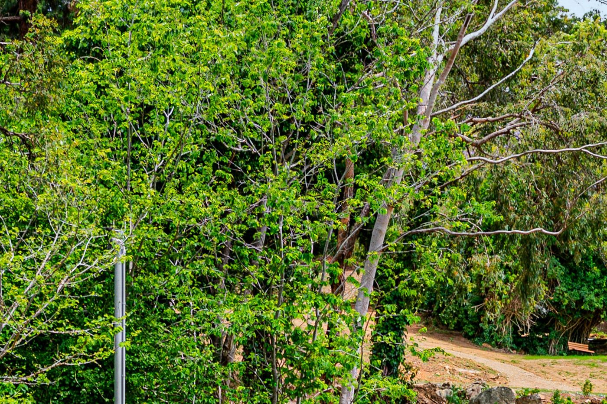
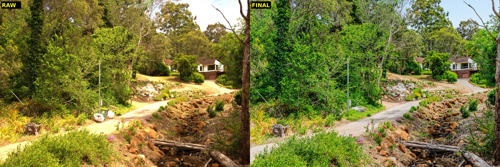
Done well: Clean neutral white walls with tungsten cast fully removed; Jarrah floors and timber kept their real depth (keep 1.0-1.15); Pale soft-blue skies, windows pulled with views; Removed photographer reflection from ensuite mirror
DSC07475.jpgPut the real wall and curtain colour back, match the raw
Colour stripped: same-room flash frame shows pale lemon walls and brown/taupe curtains; final is near-monochrome (white walls, grey curtains, gate keeps 18% of raw colour).
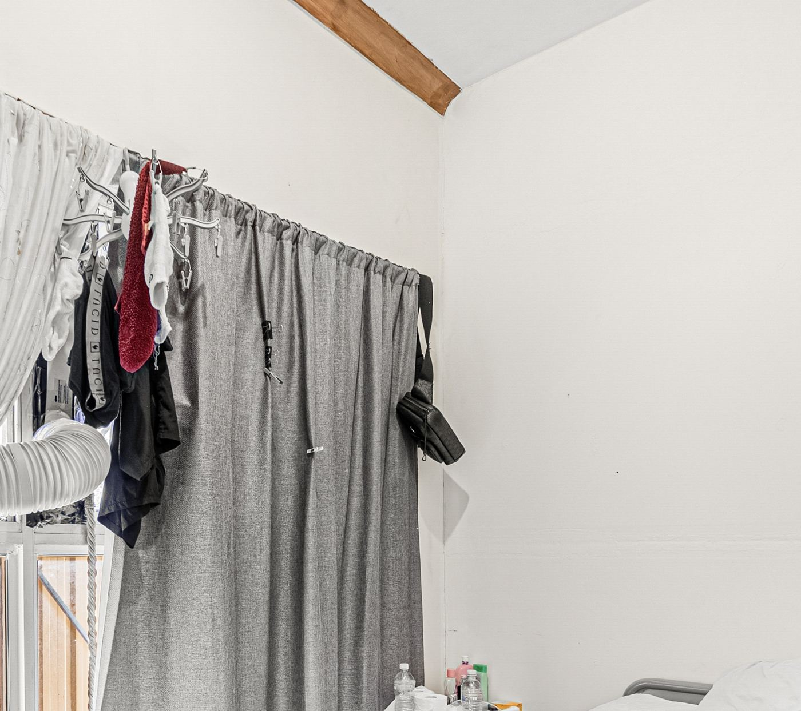
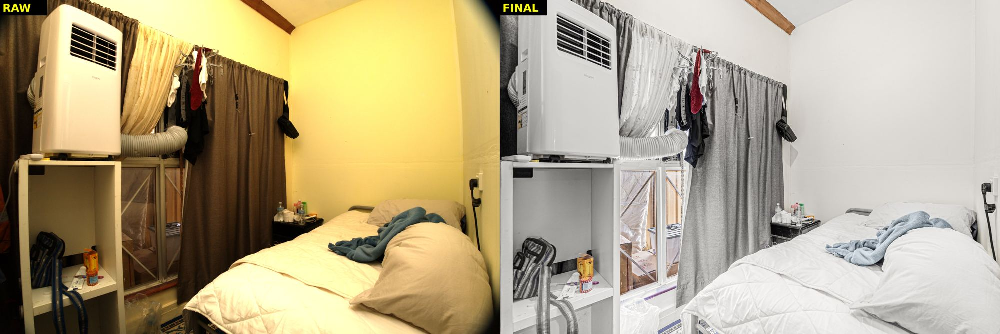
DSC07402.jpgRestore the warm taupe tile colour from the raw
Bathroom colour stripped: flash frame shows warm taupe wall tiles and brown floor tiles; final turns tiles cold neutral grey (keeps 51% of raw colour).
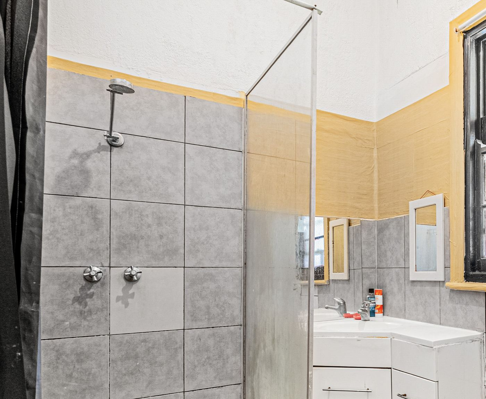
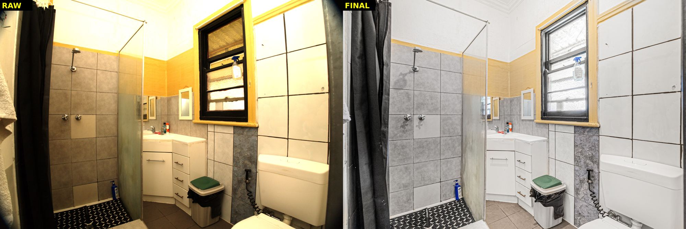
Done well: Exteriors natural with pale soft-blue skies, no HDR glow; Living room 07413 yellow walls and timber floor true to life; Windows pulled with outside views where clear glass
DSC08991.jpgPut the real honey timber floor colour back, match the raw
Timber floors recoloured to a pale grey-brown wash across the set. The same-room flash frame (DSC08996, daylight WB) shows a mid-tone honey timber floor: floor chroma raw 32-34 vs final 8-16 (final keeps about 25-45% of the floor colour). Same in living DSC09043 (raw C35 vs final C9-11) and DSC09054 (C28 vs C12.5), and all other timber-floor rooms. The buyer would see a different floor from the real one.
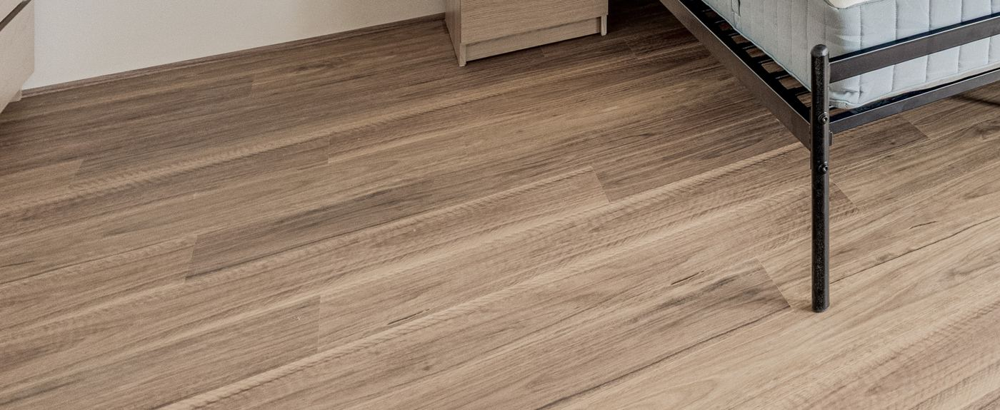
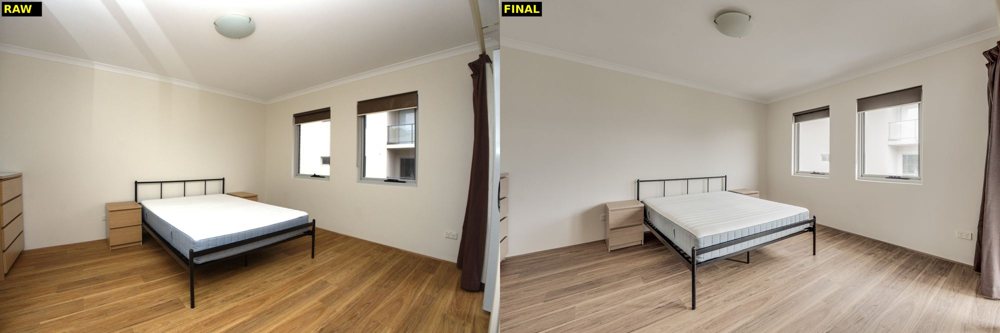
DSC09043.jpgMatch the floor colour to the raw in every timber room
Same floor wash in the living/kitchen: honey timber in the raw is delivered as pale greige (floor chroma 35 -> 9-11). Applies to every timber-floor photo (bedrooms 08979-08991, living 08997-09074).
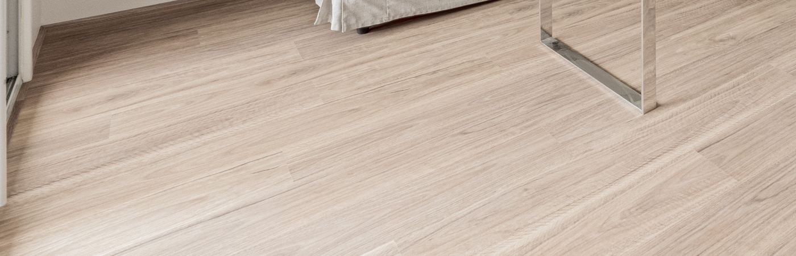
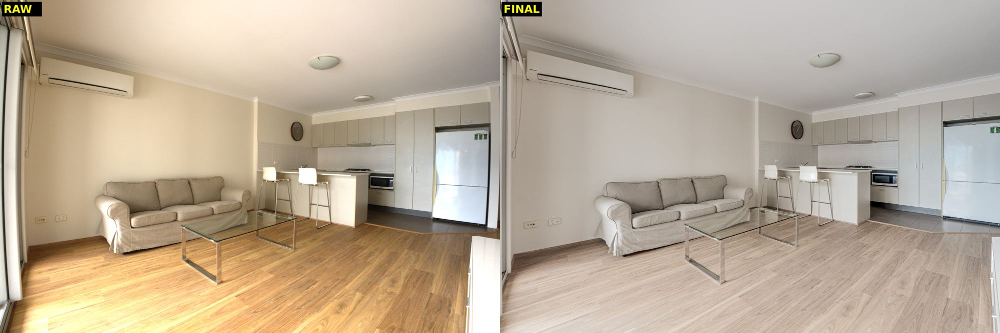
DSC08956.jpgRemove the duplicate copies, deliver one photo per angle
Duplicate deliverables: 7 angles delivered twice under two file names (DSC08952/08956, 08958/08962, 08963/08967, 08968/08972, 08973/08977 are pixel-identical edits; 08979/08983 and 08985/08989 are the same frame edited twice). 38 files but only 31 distinct photos.
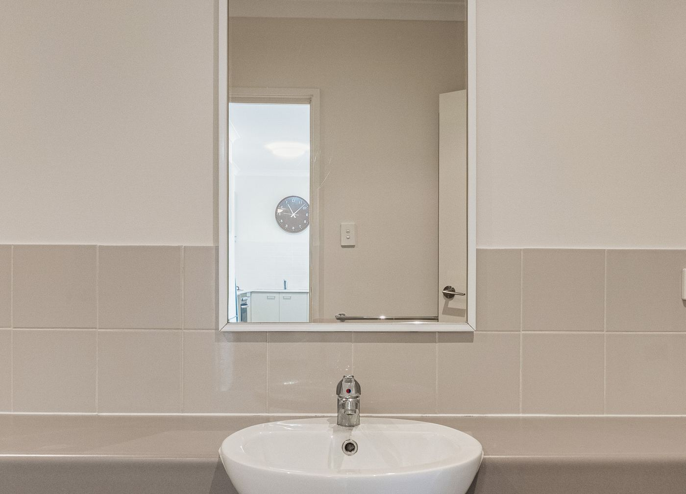
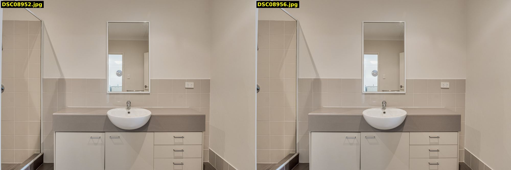
Done well: Window views recovered cleanly (living DSC09054 shows the balcony and buildings where the raw is blown); Walls kept warm off-white, not pushed creamy; Exteriors natural: brick and red paving not over-saturated, soft pale-blue sky; Verticals straight across the set
DSC07277.jpgRestore the real warm beige tile colour from the raw; soften tile texture
Re-edit still not true to raw: the warm peach/terracotta-beige floor tiles are now cool grey, and the tile mottling has been pushed into dark, dirty-looking blotches (100% crop). Seen across all the tiled living/dining/kitchen re-uploads (07229-07316).
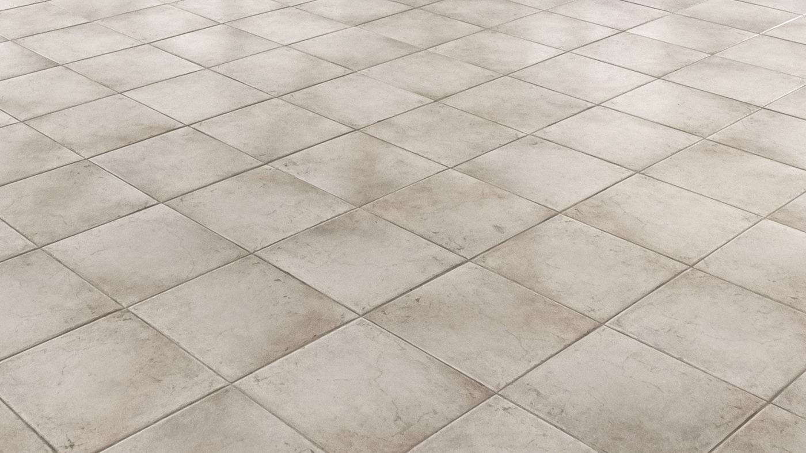
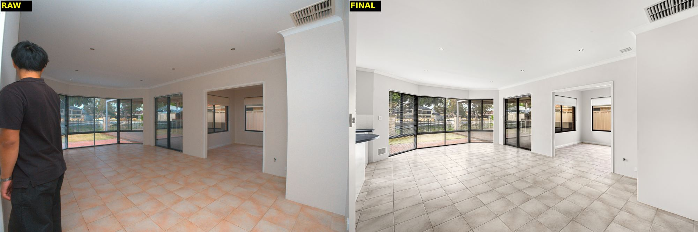
DSC07300.jpgMatch the floor tile colour to the raw
Kitchen tiles stripped from warm peach-beige to neutral grey (raw floor R-B about 24 when the raw is balanced on the wall; final about 3). Walls are fine.
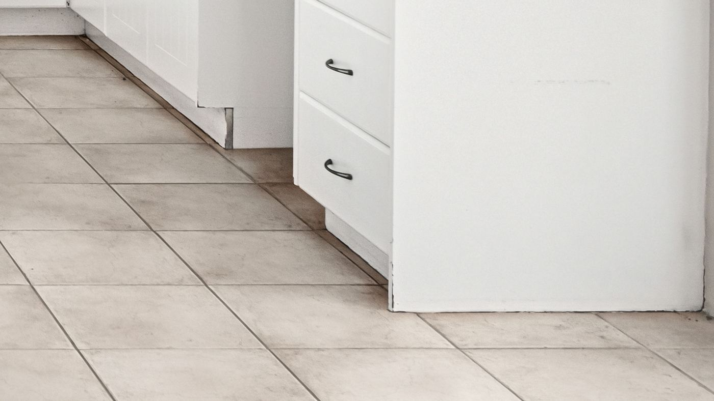
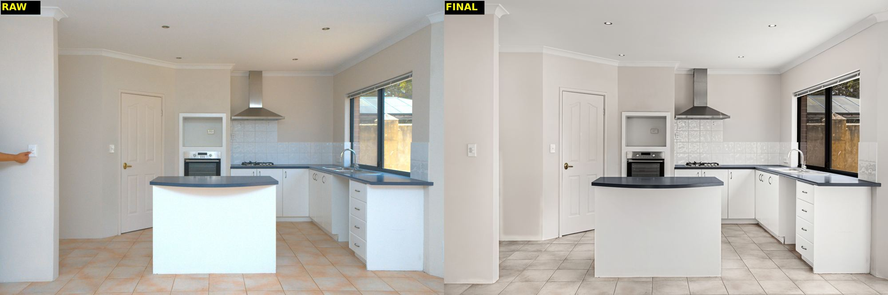
DSC07235.jpgRestore the warm tile colour; reduce clarity on the floor
Same grey, blotchy tiles in the living room. The raw flash frame shows warm sandstone-peach tiles.
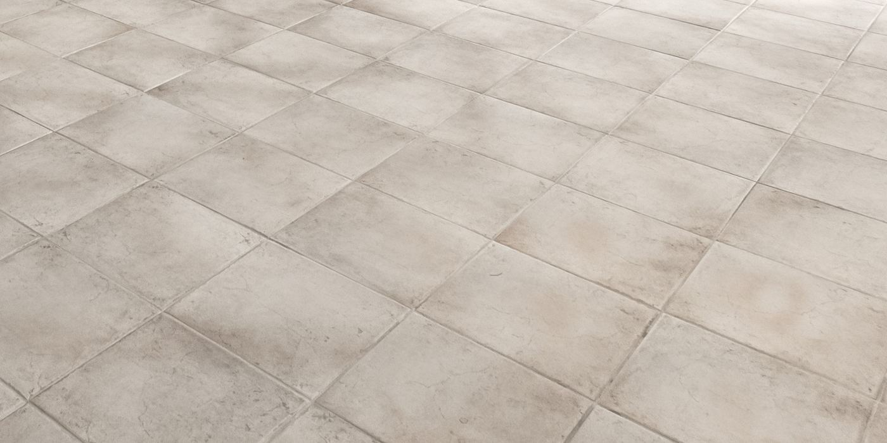
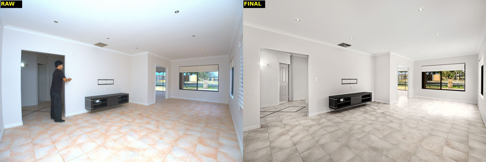
Done well: Upstairs re-uploads now look natural at 100%, not crunchy or over-sharp; Window views pulled in cleanly (arched window 07416, bedroom 07445); Walls neutral off-white, not cream; Front exterior natural, no HDR glow
DSC05124.jpgPull garage door back to the raw's cedar brown
Cedar-brown garage door pushed to bright tangerine orange; much brighter and more saturated than the raw (gate pavers/brick x1.89). Same treatment, milder, on DSC05144 and DSC05129.
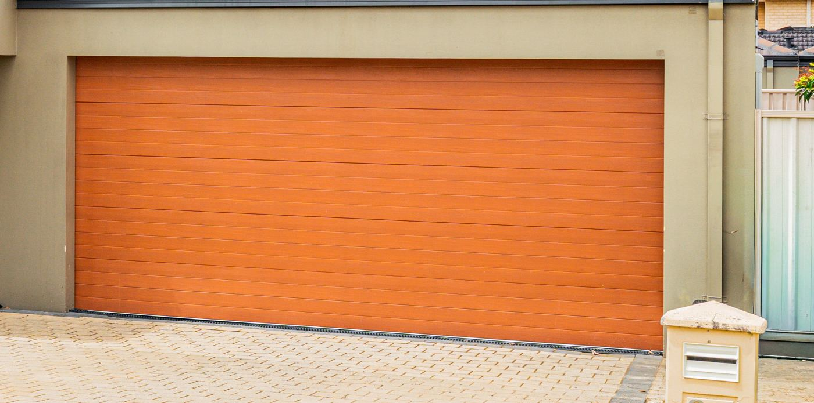
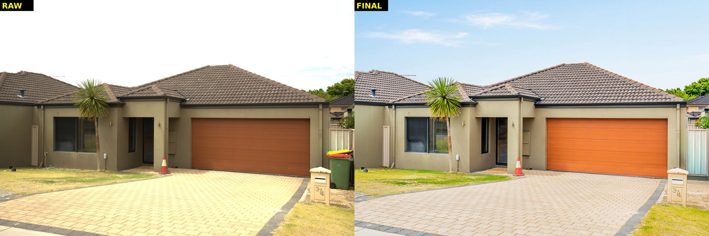
Done well: Clean, true white bathrooms and warm beige walls; Window views pulled in cleanly (kitchen, living); People and photographer reflection removed neatly; Pale soft-blue skies, natural exteriors
DSC05612.jpgRemove the colour moire in the flyscreen door view
Flyscreen door view has strong orange/blue colour moire banding over the fence and lawn; it exists faintly in the raw but the edit has amplified it.
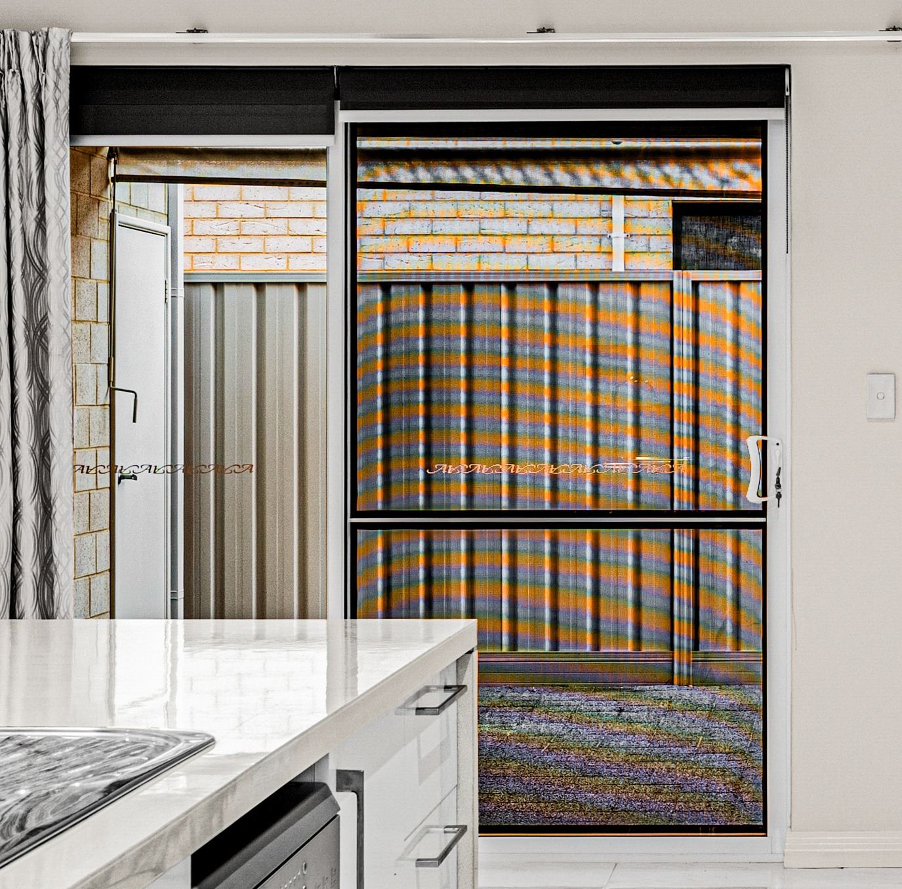
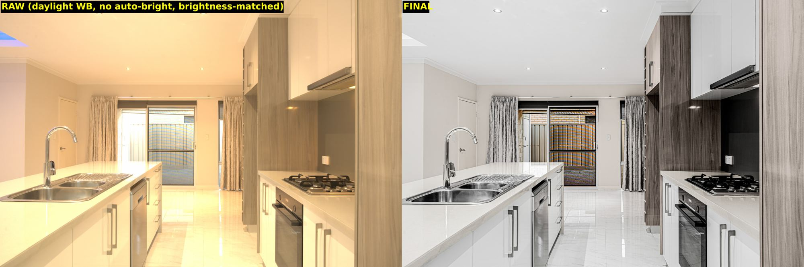
Done well: Heavy tungsten/mixed cast corrected to clean neutral whites; Camera reflection removed from ensuite mirror; Natural, consistent sunset skies across exteriors and windows; Carpet and timber colour broadly kept